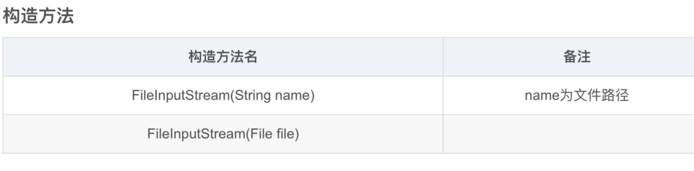
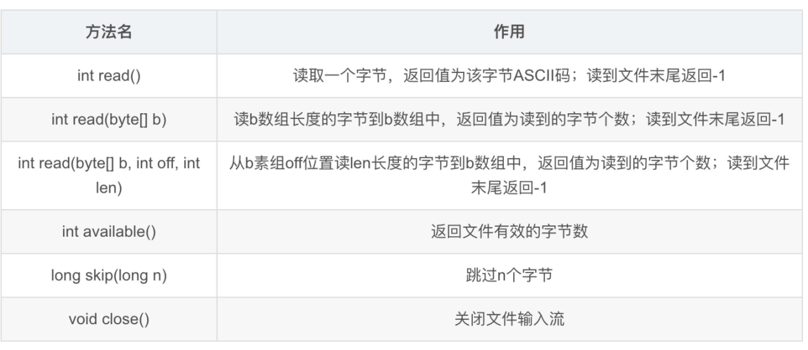
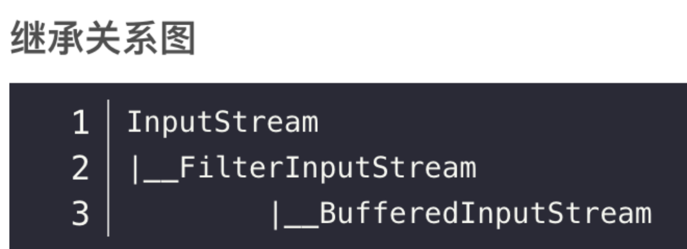
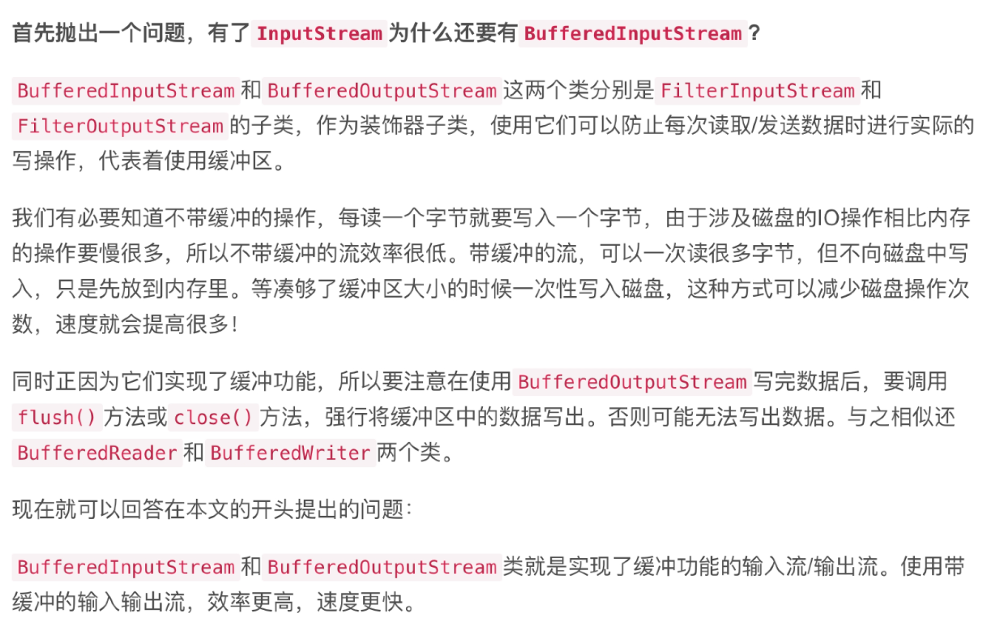
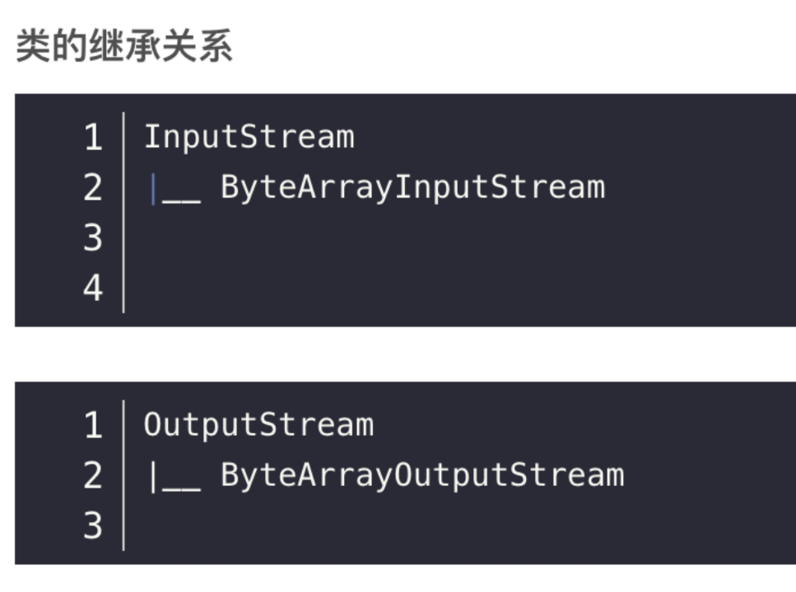
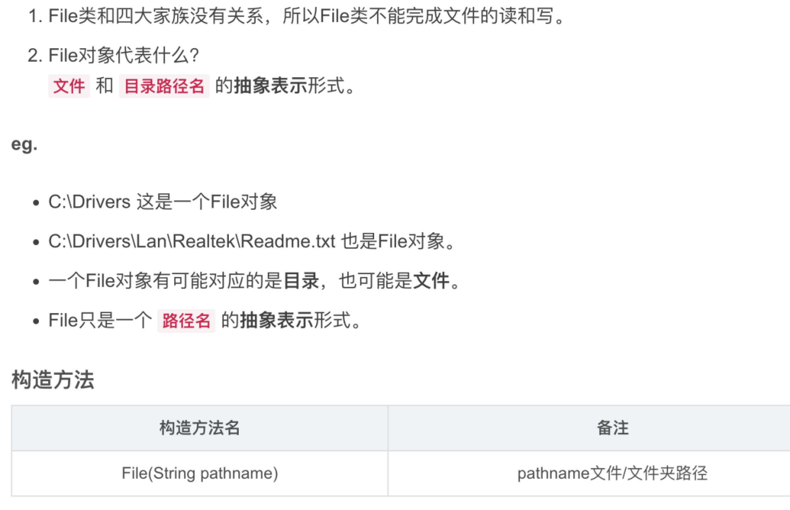
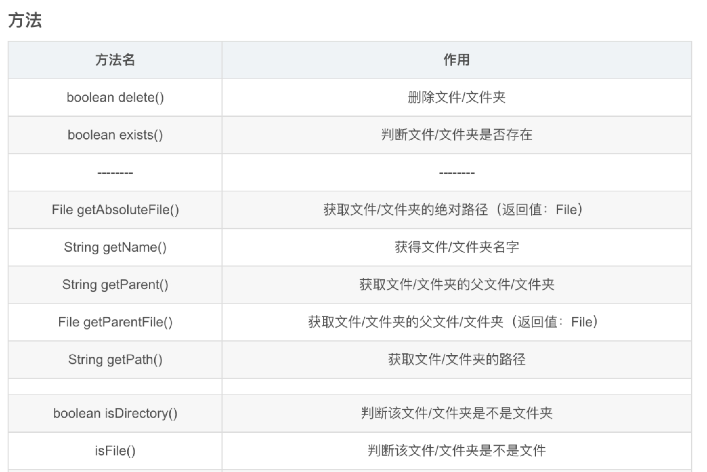
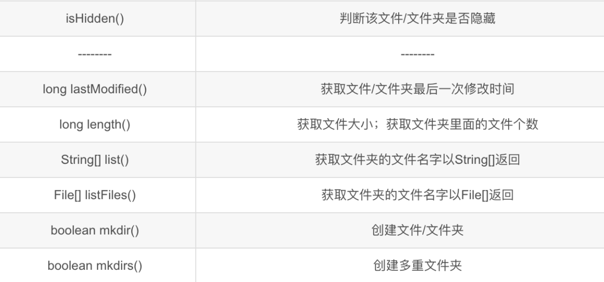

IO流
分类：
输入流、输出流
字节流、字符流
IO流四大家族首领
字节流
java.io.InputStream 字节输入流
java.io.OutputStream 字节输出流
字符流
java.io.Reader 字符输入流
java.io.Writer 字符输出流
注意：
四大家族的首领都是抽象类。(abstract class)
所有的流都实现了：
java.io.Closeable接口，都是可关闭的，都有 close() 方法。
流是一个管道，这个是内存和硬盘之间的通道，用完之后一定要关闭，不然会耗费(占用)很多资源。养成好习惯，用完流一定要关闭。
所有的 输出流 都实现了：
java.io.Flushable接口，都是可刷新的，都有 flush() 方法。
*养成一个好习惯，输出流在最终输出之后，一定要记得flush( )刷新一下。这个刷新表示将通道/管道当中剩余未输出的数据强行输出完（清空管道！）刷新的作用就是清空管道。*
ps：如果没有flush()可能会导致丢失数据.
在java中只要“类名”以 Stream 结尾的都是字节流。以“ Reader/Writer ”结尾的都是字符
Java要掌握的流（16个）
****文件专属****：
java. io. FileInputStream（）
java. io. FileOutputStream（）
java.io.FileReader
java.io.FileWriter


转换流：（将字节流转换成字符流）
java.io.InputStreamReader
java.io.OutputStreamWriter
缓冲流专属：
java.io.BufferedReader
java.io.BufferedWriter
*java.io.BufferedInputStream*
*java.io.BufferedOutputStream*

数据流专属：
java.io.DataInputStream
java.io.DataOutputStream
标准输出流：
java.io.PrintWriter
java. io. PrintStream（）
对象专属流：
java.io.ObjectInputStream（对象输入流）
java.io.ObjectOutputStream（对象输出流）
字节数组流：

ByteArrayInputStream、ByteArrayOutputStream
ByteArrayInputStream 可以将字节数组转化为输入流 。
ByteArrayOutputStream可以捕获内存缓冲区的数据，转换成字节数组。
code：

File文件类
java.io.File


